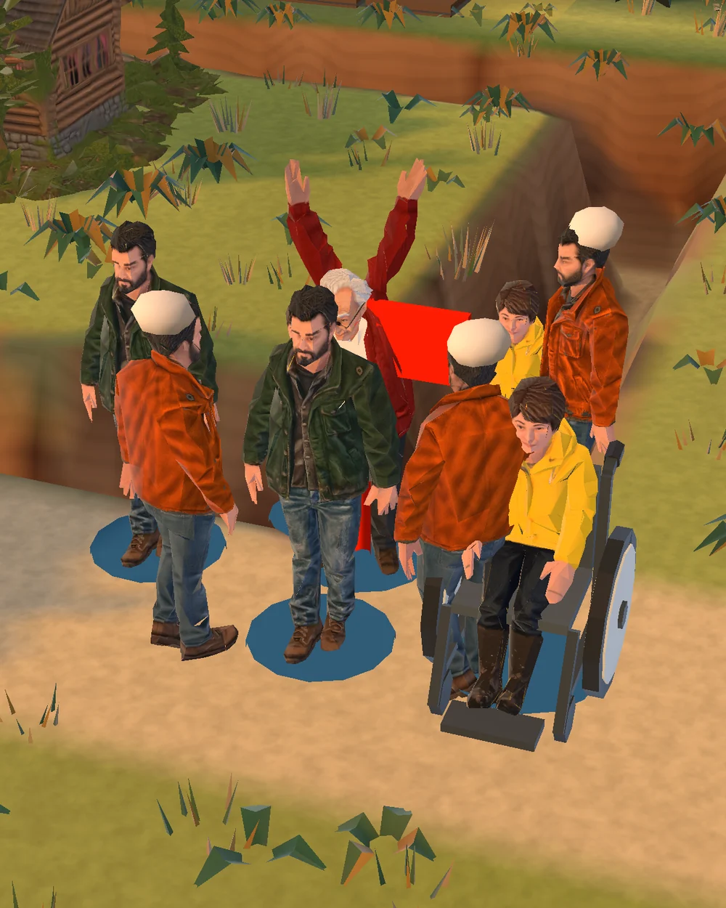

A mixed-reality rescue strategy game · Meta Quest 3 and 3S · in development
Small worlds.
Big saves.
A miniature valley appears on your real table. Something is coming: a flood, a fire, a tide, a lava flow. You place the plan with your hands, then watch it play out.
Try it: one barrier, three places to put it.
This is First Crossing, the first mission. The reservoir is rising. Choose where the flood barrier goes and watch four minutes of the real simulation.
Kept dry by your barrierFlooded because of it
Every frame is the output of RESQ's deterministic simulation for that choice (recorded with lab webflood W1-M1), sampled every 4 seconds. Nothing is animated by hand. In the game, the forecast shows you this before you commit.
The whole campaign
25 missions, drawn from the game's own map files.
Five valleys, five dangers. Each world's first mission is always open; Open play unlocks the rest.
01 · Floods
Alder Valley
M1
First Crossing
M2
The Lower Road
M3
Two Banks
M4
Power Before Water
M5
The Long Way Home
02 · Wildfire
Emberwood
M1
A Line in the Trees
M2
Last Bus from Camp
M3
Water Is a Route
M4
When the Wind Turns
M5
The Green Corridor
03 · Snow and avalanches
Frostline
M1
Hold the Station
M2
Above the Snowline
M3
The Quiet Slope
M4
Cable and Current
M5
Dawn at Frostline
04 · Tides and storm power
Tidemark
M1
Between Two Tides
M2
Keep the Light
M3
The Floating Market
M4
Storm Switch
M5
Harbor of Everyone
05 · Lava and heat
Cinder Reach
M1
A Path Through Heat
M2
Borrowed Safety
M3
The Cooling Works
M4
Three Ways Out
M5
Every Little Life
On your table
Small enough to lean over. Detailed enough to care about.



Hands first
Two hands, one hand, or none at all.
- Pinch and place. Tools come from a tray at the near edge of the board; drop them on glowing spots.
- Either hand alone. Every mission can be finished one-handed, left or right.
- Hands-free. Look at a control until it fills, and step time forward one or five seconds at a time.
- Seated, two-foot reach. Text to 150%, high contrast, calmer visuals and a relaxed pace are in Settings.